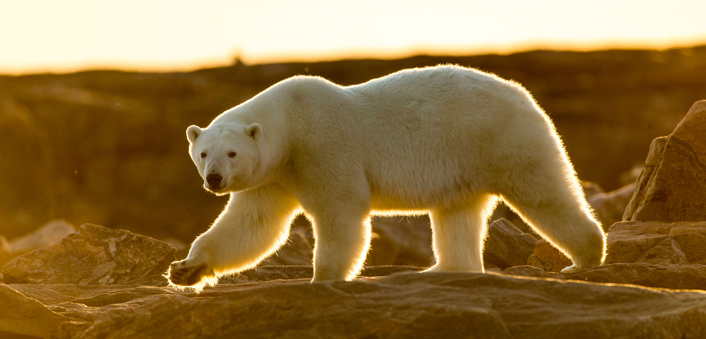

CONCLUSION OF POLAR BEARS
*polar bear are on their way to extinction . if we all pitch in and do something we can probably bring polar bears back to average population... Go ahead, start now with the journey to save the polar bears..!!!!
* Although they look very strong and people may think that they are very fierce, they are not in fact.. after you have learnt about their fun facts. they actually very cute!!!
so we should protect them.......
